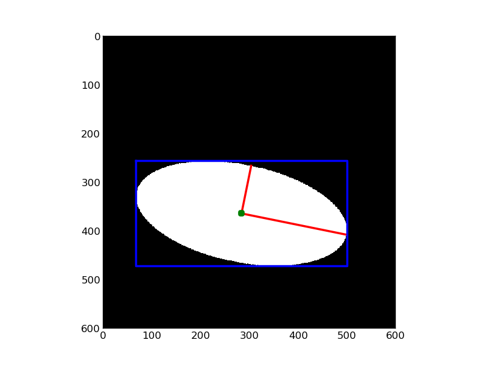

Measure region properties¶
This example shows how to measure properties of labelled image regions.
import math
import matplotlib.pyplot as plt
import numpy as np
from skimage.draw import ellipse
from skimage.morphology import label
from skimage.measure import regionprops
from scipy.ndimage import geometric_transform
ANGLE = 0.2
def rotate(xy):
x, y = xy
out_x = math.cos(ANGLE) * x - math.sin(ANGLE) * y
out_y = math.sin(ANGLE) * x + math.cos(ANGLE) * y
return (out_x, out_y)
image = np.zeros((600, 600), 'int')
rr, cc = ellipse(300, 350, 100, 220)
image[rr,cc] = 1
image = geometric_transform(image, rotate)
label_img = label(image)
props = regionprops(label_img, [
'BoundingBox',
'Centroid',
'Orientation',
'MajorAxisLength',
'MinorAxisLength'
])
plt.imshow(image)
for prop in props:
x0 = prop['Centroid'][1]
y0 = prop['Centroid'][0]
x1 = x0 + math.cos(prop['Orientation']) * 0.5 * prop['MajorAxisLength']
y1 = y0 - math.sin(prop['Orientation']) * 0.5 * prop['MajorAxisLength']
x2 = x0 - math.sin(prop['Orientation']) * 0.5 * prop['MinorAxisLength']
y2 = y0 - math.cos(prop['Orientation']) * 0.5 * prop['MinorAxisLength']
plt.plot((x0, x1), (y0, y1), '-r', linewidth=2.5)
plt.plot((x0, x2), (y0, y2), '-r', linewidth=2.5)
plt.plot(x0, y0, '.g', markersize=15)
minr, minc, maxr, maxc = prop['BoundingBox']
bx = (minc, maxc, maxc, minc, minc)
by = (minr, minr, maxr, maxr, minr)
plt.plot(bx, by, '-b', linewidth=2.5)
plt.gray()
plt.axis((0, 600, 600, 0))
plt.show()
Python source code: download (generated using skimage 0.7.0)